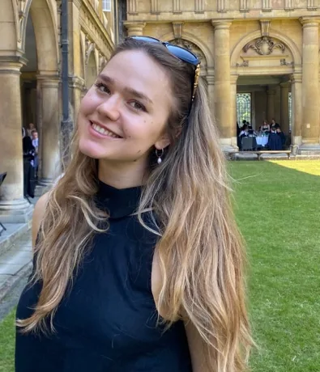
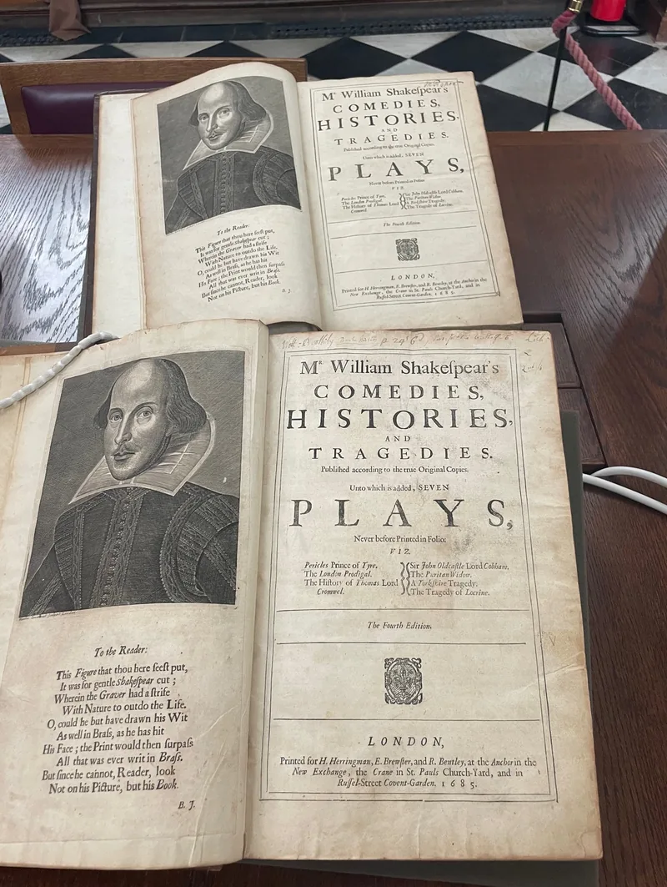

About the founder
Louisa Grinyer
First-Class English graduate and Senior Scholar of Trinity College, Cambridge.
Louisa read English at Trinity College, Cambridge. She graduated with a First and was made a Senior Scholar of the college. She also holds a master's in Acting from ArtsEd, London.
During her own application, Louisa was surprised at the lack of guidance surrounding how to succeed in attaining an Oxbridge offer.
Passionate about sharing her expertise with aspiring candidates, Louisa started the Cambridge Collective to equip students with clarity and confidence: fostering their ability to craft impactful personal statements, develop academic insights, and thrive in interviews, to achieve their full potential.
How we teach
The first session is a conversation. We want to know what you enjoy, where you feel stuck and what you are aiming for. From that, we agree a plan and a pace.
Lessons are tailored to the student's individual goals and personal needs. The plans are designed to help the students work systematically towards their target application or exam, equipping them with all the skills required to excel academically.
We can help you with:
- Super-curricular exploration
- Personal Statements
- Admissions Tests
- Mock Interviews
- Personal statements: we start from what you have read and thought, not from a template. We help you shape that into clear, direct writing.
- Admissions tests: timed practice on past-style questions, with feedback on structure and argument.
- Mock interviews: full-length practice interviews with feedback on the same day.

Book a free call with Louisa
Twenty minutes to talk through goals and timing. No obligation.
Book a free consultation